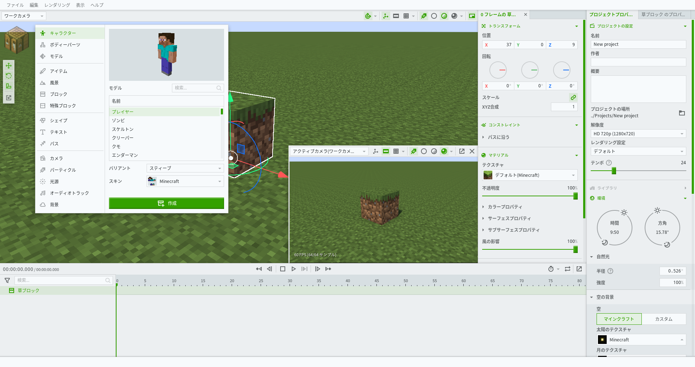
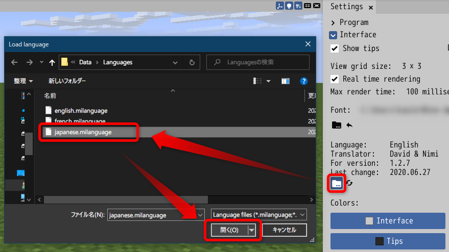

本パッチデータはMine-imatorのソフトを日本語に表示させる言語ファイルとなります。
ブロックの名前、MOBの名前はJava版のMinecraftに合わせて置き換えてます。
誤訳等に関する指摘は、フォームかTwitterにお願いします。
日本語化にすると、一部の動作に不具合が起こる場合があります。ご心配な方は日本語化の導入はおすすめしません。
パッチデータの使用は個人利用に限って利用できます。改変の有無かかわらず、パッチデータを二次配布することは厳禁とします。
Mine-imatorで使われているフォントは日本語に対応してないので、日本語のフォントファイルに置き換える必要があります。
日本語フォントの用意ができていない方は、IPAexゴシックをダウンロードしてください。インストールは不要です。
IPAフォントサイトへ設定した日本語フォントが消えてしまうのを防ぐため、ドキュメントフォルダに「fonts」というフォルダを作り、ここにフォントファイルを配置しておいたほうがいいでしょう。
新規作成後、上にある歯車アイコン設定をクリックし、「Interface」を開いてください。Font: Defaultの下のフォルダアイコンをクリックして用意した日本語フォントに切り替えます。
さらに下のフォルダアイコンをクリックしてjapanese.milanguageに切り替えたら日本語化の完了です。
2021/05 一部の翻訳を修正
2021/02 誤訳の修正
2020/07 Mine-imator ver 1.2.7に対応
2020/01 パッチデータ公開